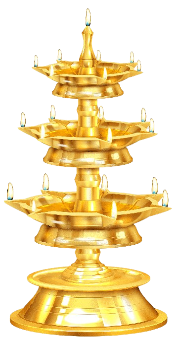
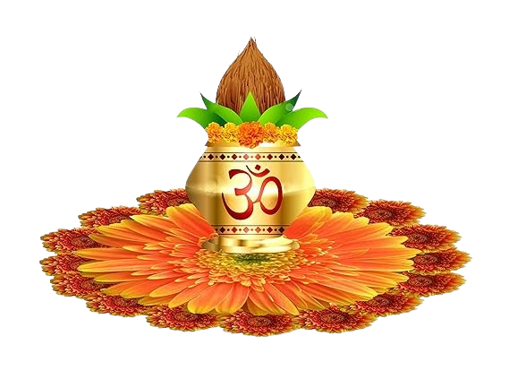
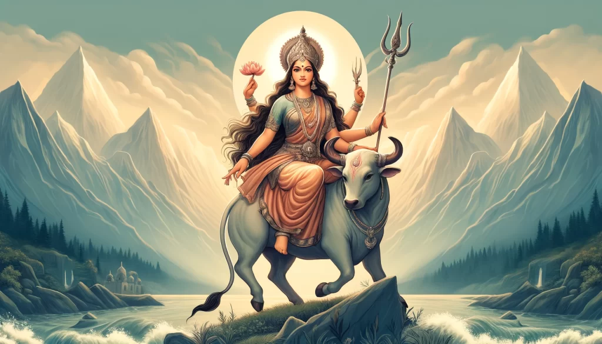
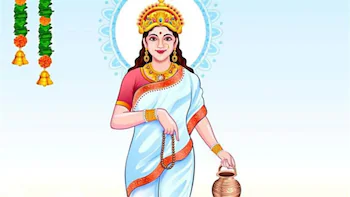
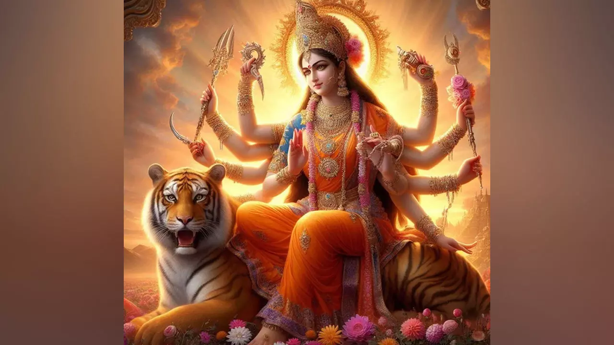
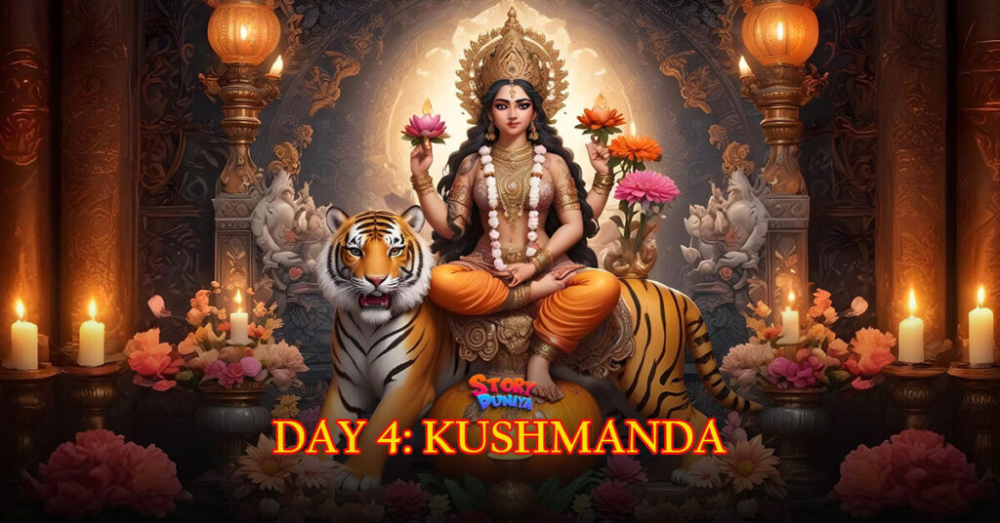
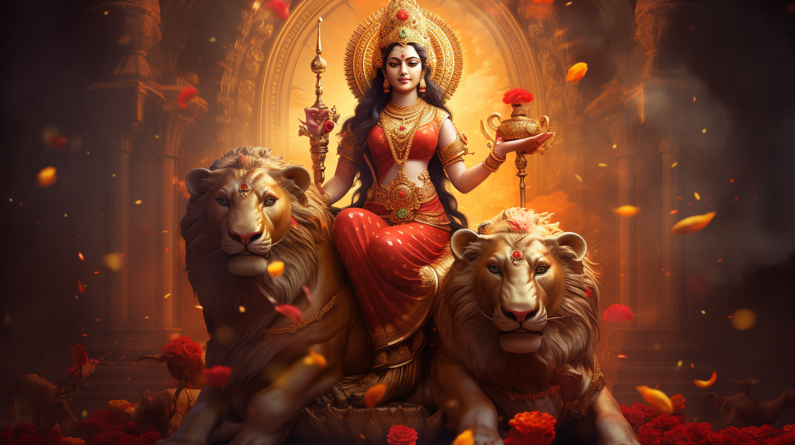
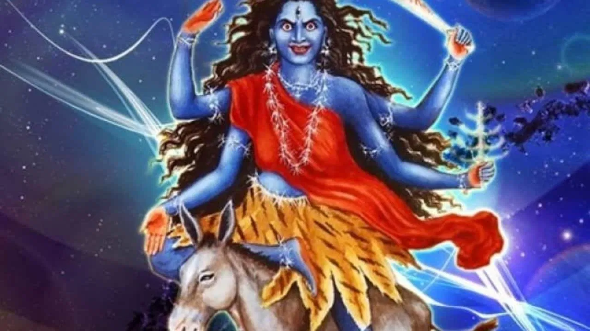
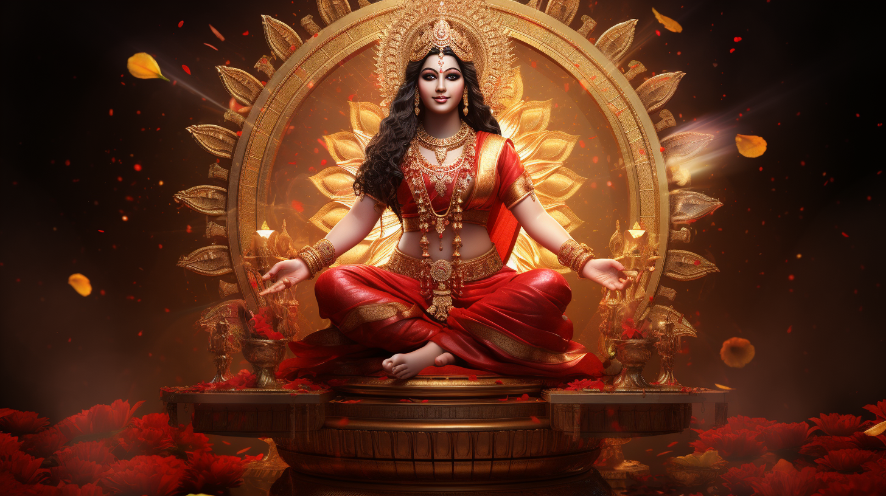
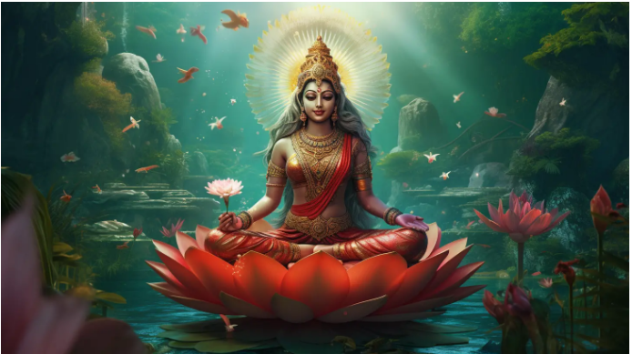

Happy Navratri
 
;
Jay Mata Di
Details in Navratri
| Mata Name | Images | Details |
|---|---|---|
| शैलपुत्री |  | नवरात्रि के प्रथम दिन मां के शैलपुत्री स्वरूप की उपासना होती है. हिमालय की पुत्री होने के कारण इनको शैलपुत्री कहा जाता है. |
| ब्रह्मचारिणी |  | मां ब्रह्मचारिणी का रूप मां ब्रह्मचारिणी का रूप मन को मोह लेने वाला है। देवी सफेद रंग की साड़ी धारण करती हैं, उनके एक हाथ में कमंडल और एक हाथ में माला है। मान्यताओं के अनुसार नवरात्रि के दूसरे दिन इनकी पूजा करने से भक्तों को ज्ञान का आशीर्वाद मिलता है, और उनके सुखों में भी वृद्धि होती हैं। |
| चंद्रघंटा |  | नवरात्रि के तीसरे दिन मां दुर्गा के तीसरे स्वरूप की पूजा-आराधना का महत्व होता है। मां दुर्गाजी की तीसरी शक्ति का नाम चंद्रघंटा हैं। नवरात्रि उपासना में तीसरे दिन इन्हीं के विग्रह का पूजा-अर्चना की जाती है। |
| कूष्मांडा |  | नवरात्र में चौथे दिन की अधिष्ठात्री देवी मां कूष्मांडा हैं। मां ब्रह्मांड के मध्य में निवास करती हैं और पूरे संसार की रक्षा करती हैं। मां कूष्मांडा के पूजन से यश, बल और धन में वृद्धि होती है। मां कूष्मांडा सूर्यमंडल के भीतर के लोक में निवास करती हैं। |
| स्कंदमाता |
 |
देवी मां की विशेष कृपा पाने के लिए नवरात्रि का समय सबसे पवित्र माना गया है। मां दुर्गा को प्रसन्न करने के लिए सभी भक्त नियमित रूप से मां देवी की पूजा अर्चना करते हैं। मान्यता है कि नौ दिनों तक मां दुर्गा की पूजा करने से आपकी मनोकामनाएं पूरी हो सकती है। इस साल चैत्र नवरात्रि की शुरुआत 09 अप्रैल 2024 से हो चुकी है। इस दौरान मां देवी के नौ रूपों की पूजा की जाती है। नवरात्रि के पांचवे दिन स्कंदमाता की पूजा की जाती है। |
| कात्यायिनी |  | शारदीय नवरात्रि का छठा दिन मां दुर्गा की छठी शक्ति मां कात्यायनी को समर्पित है। ऋषि कात्यायन की पुत्री होने के कारण इनका नाम कात्यायनी रखा गया। मां कात्यायनी की पूजा से विवाह संबंधी समस्याएं दूर होती हैं। |
| कालरात्रि |  | मान्यता है कि माता रानी को नवरात्रि के सातवें दिन गुड़ का भोग लगाना अत्यंत शुभ होता है। नवरात्रि के सातवें दिन का शुभ रंग: मां कालरात्रि को लाल रंग अतिप्रिय है। ऐसे में मां कालरात्रि की पूजा के दौरान लाल वस्त्र पहनना शुभ होता है। 'ओम ऐं ह्रीं क्लीं चामुण्डायै विच्चै ऊं कालरात्रि दैव्ये नम:। |
| महागौरी |  | नवरात्रि के आठवें दिन मां महागौरी का ध्यान-स्मरण, पूजन-आराधना भक्तों के लिए सर्वाधिक कल्याणकारी है। इनकी उपासना से मनुष्य के सभी पाप धुल जाते हैं, उपासक सभी प्रकार से पवित्र और अक्षय पुण्यों का अधिकारी हो जाता है। |
| सिद्धिदात्री |  | मां सिद्धिदात्री का रूप अत्यंत ही परम दिव्य है। मां का वाहन सिंह है और देवी कमल पर भी आसीन होती हैं। इनकी चार भुजाएं हैं, दाहिने ओर के नीचे वाले हाथ में चक्र, ऊपर वाले हाथ में गदा और बाईं ओर के नीचे वाले हाथ में शंख और ऊपर वाले हाथ में कमल का फूल है। |
Created By Ananya Singh Thakur....